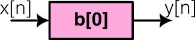
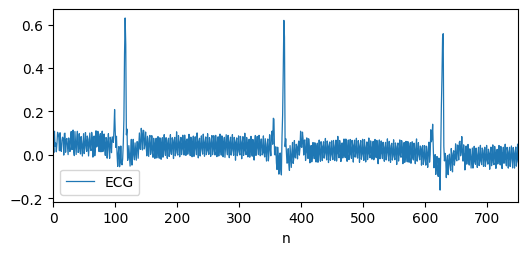
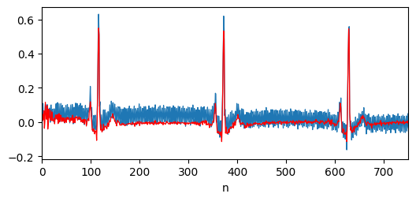

Filtros digitales
Análisis y procesamiento de Señales
Filtros digitales
Clasificación de filtros digitales
Clasificación de filtros digitales
- No recursivos: La salida depende únicamente de las entradas (presentes y pasadas).
- Estabilidad garantizada: Tienen todos sus polos en el origen.


Clasificación de filtros digitales
- Clasificación según la causalidad: ¿Utiliza muestras "del futuro"?
- Causal: Solo utiliza entradas y salidas presentes y pasadas. Poseen transformada Z.


Clasificación de filtros digitales
- Orden del filtro: Número de muestras pasadas (retrasos) necesarias para calcular la salida.
- Ejemplos visuales:
- Orden cero
- 1er Orden
- 2do Orden
- 3er Orden


Tipos de filtros
Ejemplos de filtros
Ejemplos de filtros
- Sistema de ganancia simple (amplificador): Este sistema aplica un factor de ganancia a cada valor de entrada.


Filtrados "diferentes"
Filtrados "diferentes"


Filtrados "diferentes"

